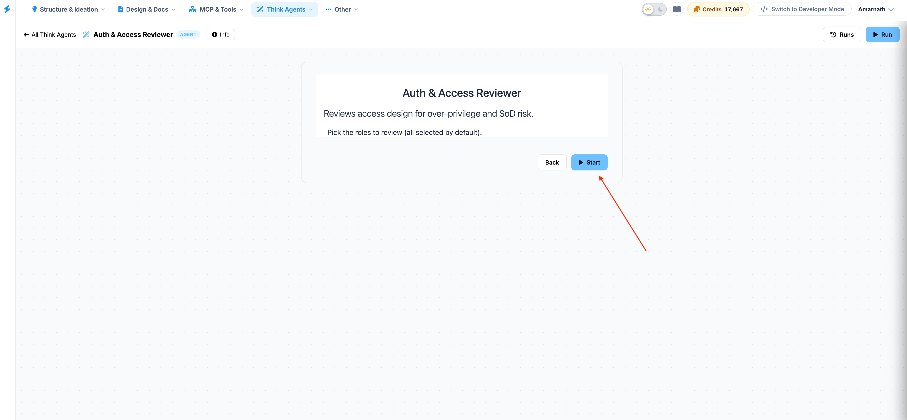
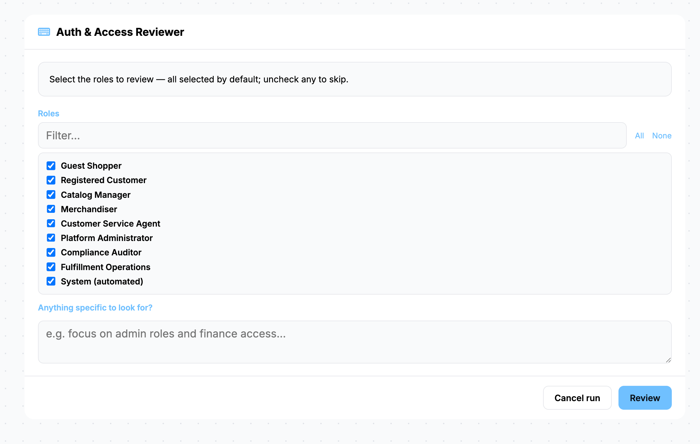
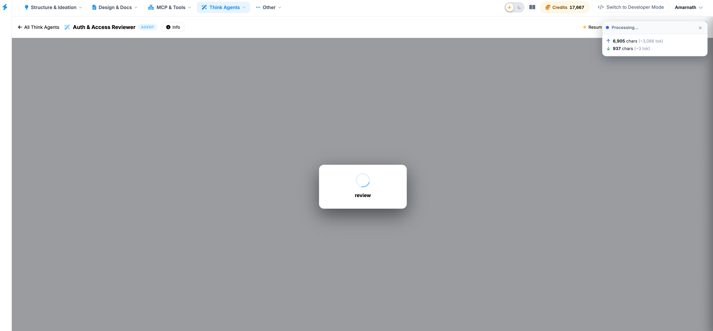
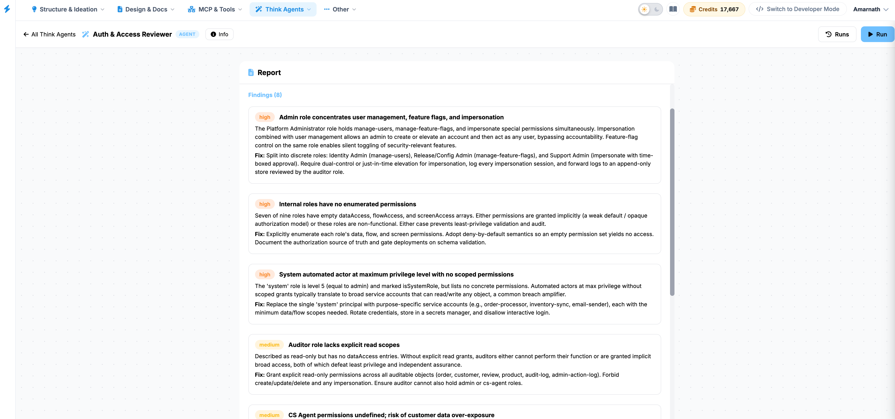

Auth & Access Reviewer
The Auth & Access Reviewer agent identifies over-privilege and Segregation of Duties (SoD) risks within system architecture role designs.
Core Mechanics
- Role Selection: Evaluates targeted roles across the system design workspace to flag access rights that exceed operational requirements.
- Over-Privilege Assessment: Scans for profiles or user groups granted broader permissions than necessary for their designated functions.
- Segregation of Duties (SoD) Detection: EvPinpoints conflicting permission configurations that would allow a single role to execute unauthorized or high-risk end-to-end business transactions.
- Execution Monitoring: Tracks active analysis cycles and historical review states through dedicated execution logs.
Step-by-Step Guide to Running a Review
Step 1: Access the Auth & Access Agent
Navigate to the Think Agents menu in your top navigation toolbar and select the Auth & Access Reviewer from your available agent library.
Step 2: Click on Start button

Step 3: Understand the Objective
The central interface configuration card explicitly outlines the scope of the evaluation:
Auth & Access Reviewer Reviews access design for over-privilege and SoD risk.
Before proceeding, ensure your underlying roles, permissions, or system data objects have been populated within your project settings so the agent has sufficient data to parse.
Step 4: Select Roles for Review
As noted in the interface, the agent is configured to pick the roles to review.
- By default, all roles are selected to ensure a comprehensive, platform-wide risk assessment.
- If you need to move backward or adjust previous structural configurations, click the
white Back button.


Step 5: Initiate the Evaluation
Once you are ready to begin the analysis:
- Click the blue Review button located at the bottom right of the central card configuration block.
- Alternatively, you can click the Run button in the top-right
control header to
trigger the agent's automated analysis.

Understanding the Results
Once initiated, the Auth & Access Reviewer will evaluate your access management design matrix against standard security heuristics to flag:
- Over-Privilege: Users or roles assigned permissions beyond what is strictly required for their functional requirements.
- Segregation of Duties (SoD) Risks: Overlapping permissions that allow a single role to execute conflicting or sensitive business combinations (e.g., both initiating and approving a financial transaction).
Review logs and historical summaries can be accessed at any time by clicking the Runs button in the upper right corner.